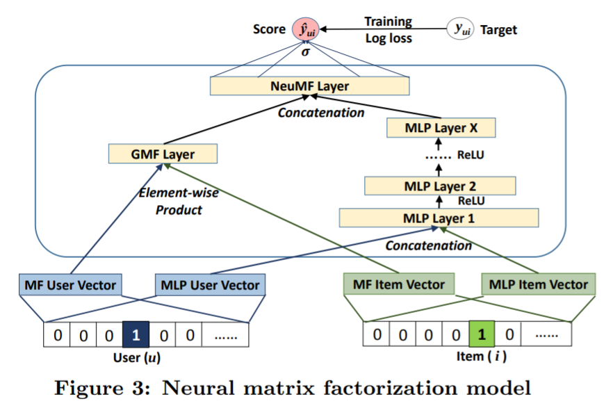
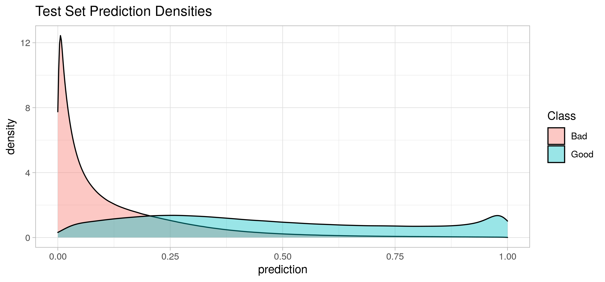

Over the past 1.5 years I have enjoyed being part of a book club with ladies from my church. Sadly our book club ended as life has pulled us in separate directions. I plan to continue reading books, but what should I read? I decided to build a recommender system.
The technical details
A recommender system utilizes user feedback history (either “explicit” feedback, such as star ratings, or “implicit” feedback, such as views, clicks, purchases, etc) to recommend items to users. Recommender systems have become ubiquitous in our society; examples include:
- Amazon recommends products to buy
- Facebook recommends friends to connect with
- YouTube recommends videos to watch
In this experiment, I’ll be using a Neural Collaborative Filtering (NCF) model, a deep learning model proposed by He et. al. in their 2017 paper. The model is implemented by the authors using Keras and is available in this GitHub repository. For my own fun exercise, I implemented the model using R Keras. You can find it in my GitHub repository.
The model is designed for binary feedback (that is, positive and negative user preferences). I’ll be using a mixture of explicit and implicit feedback, described in more detail in the Inferring Likes and Dislikes section of this post. The image below, from the NCF paper, shows the neural network model architecture.
The Data
To train the model I used a data set originally obtained from GoodReads.com, a social book cataloging system. The data is available on the USCD Book Graph webiste. Specifically, I’m using three files, each containing the following fields:
- interactions: Contains
user_id,book_id,is_read,rating,is_reviewed - book_info: Information about the books including title, isbn, author(s), and list of shelves.
- book_id_map: books ids used to join the other two data sets together
Note that this data set is a bit outdated (only six books from 2019 and none from 2020 or later). It would be nice to obtain an updated data set.
Filtering by genre
The shelves field in the book_info data set is a list of virtual shelves that users have added books to. The shelf name is defined by the user and can be anything such as “to read”, “book club”, or the name of the genre. By looking at the list of shelves associated with a particular book, we can make some inferences about its genre. To limit books for my book club to Christian fiction (the focus of our group), I included books that were on at least one shelf with “christian” in the name and at least one shelf with “fiction” in the name (being careful to ignore “nonfiction” and “non-fiction”). This isn’t a perfect method for determining genre, but it significantly reduced the data size: 228,648,342 user-book interactions reduced to 5,628,062, a 98% reduction. If you’d like to try filtering the data by a different genre, use the genre_subset.R script.


The top book, The Lion, the Witch and the Wardrobe, is a well known classic fiction book and part of the series of books at #3, The Chronicles of Narnia. It is one that I read as a young girl. I was not familiar with the books at #2 and #4: The Poisonwood Bible and The Five People You Meet in Heaven. Finally, the last on the list at #5 is Unbroken: A World War II Story of Survival, Resilience, and Redemption. This book is a true story and actually shouldn’t be included in the fiction genre. So, we see that this filtering method isn’t perfect. I’m OK with that.
Inferring Likes and Dislikes
For the NCF model, we need a list of books that each user liked and a list that they did not like. Some users provided explicit ratings (1 to 5 stars), however, not all users rate the books that they read. Additionally, it may be the case that some users just rate books that they like (or didn’t like). To obtain a sufficient amount of training data, I included both explicit and implicit feedback.
We’ll assume that a reader likes the book if:
- They read the book AND (either gave it 4 or 5 stars OR didn’t provide rating). That is:
(is_read == 1 & (0 == rating | rating >= 4)), OR - The book is on their shelf and not read yet. That is,
(is_read == 0).
This is an optimistic viewpoint because we may include books on the reader’s shelf that they later read and decide that they do not like.
Alternatively, we’ll assume that a reader did not like a book if they read it and gave it a rating of 1 or 2. Books with a score of 3 were not used for model training.
Note that there exist cases where no rating was provided (value of rating is 0), but a text review exists. An enhancement for obtaining more positive and negative examples might be to mine the sentiment of reviews for these instances.
After performing these steps, I filtered out users who did not have at least 3 “positive” book examples (a threshold that could be tweaked). As a result we have a total of 264898 users and 25450 books.
Data for my book club
I added our club’s books to the data set. We have read dozens of books, but the following were those that we had a strong opinion about (either “good” and “bad”).
As you can see, the number of “duds” was much smaller than the number of books that we liked. Francine Rivers was a popular author (I’ve only read one of her books, but hope to catch up soon). I would have also used the following books as positive training examples, but they were not in the data set: The Kremlin Conspiracy by Joel Rosenberg and My Heart Belongs in Blue Ridge by Pepper Basham.
Train/Validation/Test Split
I split the data into train, validation, and test sets following the method used in the NCF paper:
- Training: 4 negatives for every positive (for each user)
- Validation: 1 positive (for each user)
- Test: 1 positive, 100 negative (for each user)
If a user did not have enough negatives for the 4-to-1 ratio of negatives to positives in the training set, then I sampled “implicit” negatives (i.e. those books that are not on the user’s shelf). The empirical popularity distribution of the books provided sampling probabilities, meaning that more popular books were more likely to be sampled. This is often a good idea for training recommender systems since users are likely already aware of the popular items. I sampled these training data points for each epoch of model training.
If the user had more negatives than the 4-to-1 ratio, then the extras were put in the test set. Subsequently, if the test set lacked the 100 negatives, then I sampled “implicit” negatives to fill out the test set (using the same strategy described for the training set). Sampling of the test set was done once prior to model training.
Results
The distribution of predictions for all books and users in the test set is shown below (separated by “good” and “bad” books).

I’m happy to see that the most of the “bad” books have low scores while the “good” books are more evenly spread out with a little bump on the high end. The goal is to score “good” higher than the “bad” (on a per-user basis).
The scores can be used to rank the books for each user. A couple of useful metrics for evaluating that ranking are:
- Hit rate (HR) at k: The percentage of users who’s “good” book appeared in their top k recommended books. (Recall the test set is composed of 100 “bad” and 1 “good” book for each user.) The range is [0, 1].
- Normalized Discounted Cumulative Gain (NDGC) at 10: “Good” items appearing lower on the list are penalized (only considering the top k items). Normalization occurs by dividing the discounted cumulative gain by its “optimal” value. The metric is then averaged over all users. The range is [0, 1].
The experiment result was 0.59 HR at 10 and 0.37 NDGC at 10 (evaluated on the test set).
As a sanity check I also computed the metrics for a recommender “model” based solely on popularity (i.e. everyone’s number one recommendation will be The Lion, The Witch, and The Wardrobe unless they already have it on their shelf). The resulting HR at 10 is 0.28 and the NDCG at 10 is 0.15. These metrics are significantly worse than those from the NCF model, so it paid to add the personalization.
Recommendations for my book club
To get a better sense of how this recommender did, let’s inspect the recommendations for my book club. The top 3 recommendations were all books by Francine Rivers (which makes sense since four of her books were on our short list of books that we liked). In fact, looking at the top 25 books on the recommended list, 76 percent were written by this author. It seems that having four of nine books by Francine as part of our “good” training set may be skewing the recommendations toward this author.
Coming in at #4, we find the first book by a different author: Gods and Kings by Lynn Austin. This is an author that we have not read before. Interestingly, the book appears as a “Readers also enjoyed” suggestion on the GoodReads page of one of our “liked” books:

Looking at the worst scoring books for our group, we find books that we would likely not enjoy: Come On Over (CO2) and Marry Me Now, Sorry Later (rank 25,437 and 25,436 respectively). In fact, these books are not even in our preferred genre of Christian fiction. They were mistakenly included due to the author’s name: Christian Simamora.
Next, I decided to look at the rank of the top recommended book for each of the authors who wrote books that my group enjoyed. The result was (out of 25,437 total books):
- Francine Rivers (#1, Mark of the Lion Trilogy)
- Lori Wick (#30, Pretense)
- Charles Martin (#32, Wrapped in Rain)
- Tessa Afshar (#38, In the Field of Grace)
- Randy Alcorn (#425, Deadline)
Interestingly, I had already ordered Tessa Afshar’s In the Field of Grace before looking at these recommendations. So, that is right on point. Sadly, Randy Alcorn’s highest ranking book is at number 425 (his book, Safely Home, was one of my favorites).
Overall, I’m fairly happy with these recommendations, even though the top of the list doesn’t demonstrate as much author variety as I’d like to see. The recommendations do feel tailored to my group’s reading interests.
Final thoughts
There are a few areas of improvement that could be made:
- Due to hardware limitations and slow model training, I didn’t perform hyper-parameter tuning. (I am using a GTX 970 GPU. Each training epoch takes a few hours.) Instead I used the defaults that were used in the NCF paper. A grid search of the hyperparamter space would likely be beneficial.
- My group’s training data is small (nine books). Compare that to Goodreads.com, which requires users to rate 20 books before they will provide recommendations. A model that is better suited for cold start situations (users with little to no training data) may be beneficial. Such models incorporates side features (e.g. author, book description).
- As mentioned earlier, the Goodreads data set that I used is a couple of years out of date. It would be great to retrain the model on newer data.
- There are many other types of recommendation models to try, some of which claim to beat NCF. See this list of must-read recommender papers.
In the meantime, I have a few books on my short list to read, but I’m still in search of more. I may try another recommender model. Or, let me know if you have a good suggestion! You can find me on Twitter @DrAmandaRP.
P.S. If you are new to deep learning in R, I recommend the Deep Learning with R book by François Chollet with J. J. Allaire.